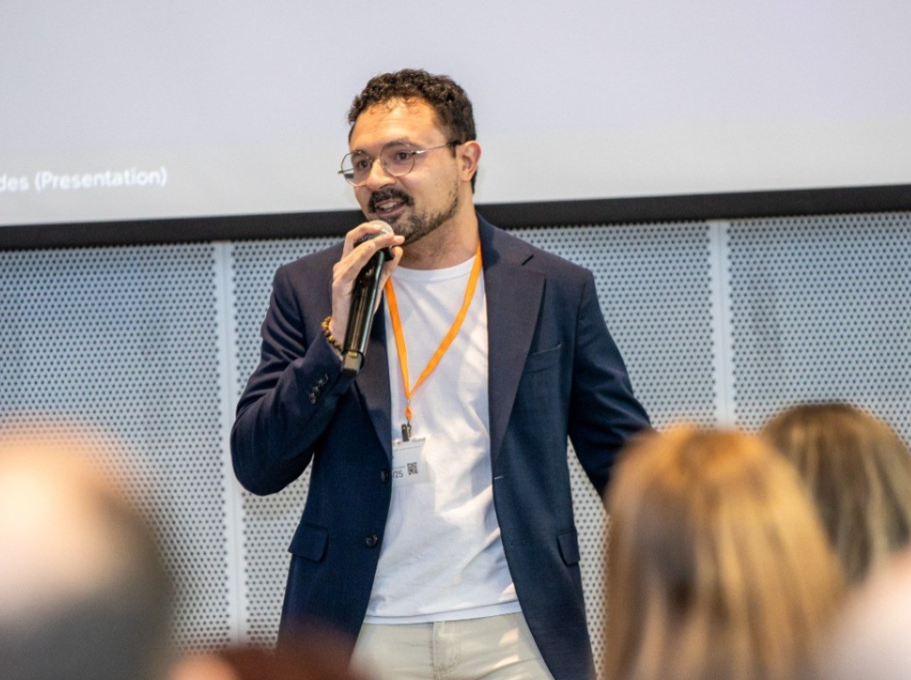
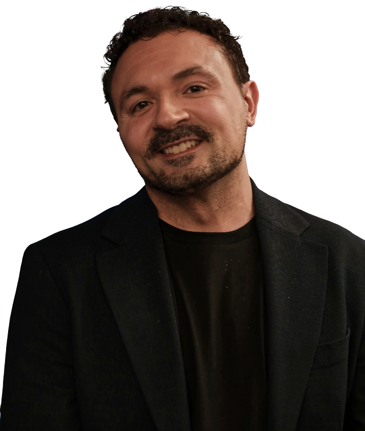

Ao longo de mais de 17 anos atuando nos bastidores do mercado digital e na docência executiva, uma realidade ficou clara: o empresário brasileiro trabalha duro, mas perde muito dinheiro por falta de processos técnicos e rastreamento correto.
Agências tradicionais focam em métricas de vaidade, enquanto o dono da PME precisa de resultados reais: clientes qualificados, redução do custo por aquisição e previsibilidade de vendas.
A AJ Santos foi estruturada para ser o guia e a retaguarda técnica que falta no seu negócio. Seja capacitando você e sua equipe em nossos treinamentos, ou assumindo 100% da sua gestão operacional, o compromisso é um só: eficiência de processo e lucro real.

17+ anos de atuação, docência executiva e experiência prática em estratégias de grandes marcas — adaptadas para o ritmo e o caixa da PME brasileira.
Sem achismos. Todas as ações são fundamentadas em métricas reais e rastreamento preciso.
Usamos tecnologia para encurtar caminhos e automatizar rotinas sem perder estratégia.
Metodologia desenhada para o Simples Nacional: processos enxutos e ROI real.
Ebooks e manuais antidesperdício prontos para aplicar hoje.
Treinamentos noturnos ao vivo e Imersão Híbrida de 8h.
Gestão operacional dedicada e engenharia de dados contínua.
Agende uma conversa técnica com o time para avaliar a estrutura de anúncios e dados da sua empresa.